PLC参加者の声インタビュー 編集ガイド
EDITING GUIDE ／ 2026.09.11
PLC参加者の声インタビュー 編集ガイド
社内版と外注版を並べて見てみました
はじめに
お疲れさまです、田中です。
北村こうきさん回、拝見しました。ありがとうございます。
外注に出していたものを社内で作れるようにする、という流れの中で、ここまで持ってきてくれたのは本当にありがたいです。
ただ、正直に言うと、外注版と並べたときに「ちょっと違うな」と感じる部分がいくつかありました。
それを僕が全部手作業で指摘していくのはお互い大変なので、5本すべてをフレーム単位で分解して、機械で突き合わせてみました。
印象ではなくて、実際に測った数字で書いています。
先に前提を共有させてください。
今回、外注さんから素材データ（背景素材やテンプレートのプロジェクトファイル）はもらえていません。
なので、完全に同じものにするのは無理です。そこは仕方ないと思っています。
でも、素材がなくても人の目で気づいて直せる部分と、数値を合わせれば寄せられる部分は確実にあります。
このページでは、その2つに絞って書きました。
「できないこと」を並べても意味がないので、「やれること」だけです。
比較したのは、この5本です。
| 区分 | 回 | 尺 |
|---|---|---|
| 社内制作 | 北村こうきさん回 | 10分41秒 |
| 外注制作 | 齋藤ひとみさん回 | 15分02秒 |
| 外注制作 | 岩田妙さん回 | 11分06秒 |
| 外注制作 | 田口恵一さん回 | 8分00秒 |
| 外注制作 | ミッチェル鈴木雅博さん回 | 14分44秒 |
1. まず、できている部分
指摘だけ並べた資料にはしたくないので、先にここを書きます。
骨格はほぼ再現できています。
- 構成（ダイジェスト → タイトルカード → 挨拶 → 質問①〜⑧ → 締め）が外注版と同じ
- 左上の質問ラベルを、質問ごとに切り替える運用ができている
- テロップ枠の位置が外注版と12ピクセル以内。これは相当寄せてくれています
- 色分けの考え方（田中＝黒、相手＝紺、強調＝赤、最強調＝金）がミッチェル鈴木さん回とほぼ同じ設計
- 金色強調の量が全体の9.2%。外注版は5.2〜9.9%なので、ちょうどいい塩梅です
- 音量は −19.8 LUFS。外注版は −13.5〜−21.3 LUFS なので、これもレンジ内
ようは、骨は通っているということです。
あとは肉付けの部分で、直せるところを直していけば見分けがつかなくなります。
2. すぐ直せること（素材はいりません）すぐ直せる
ここからが本題です。
この章に書いたことは、外注さんの素材が手元になくても、全部そのまま直せます。
2-1. タイトルカードの「×」が抜けています
社内版（北村さん回）
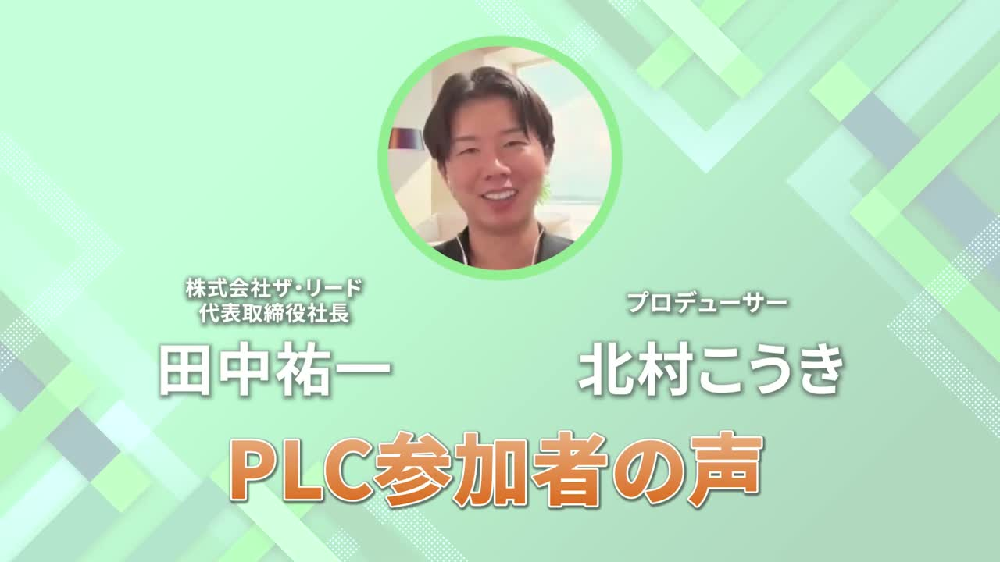
外注版（田口さん回）
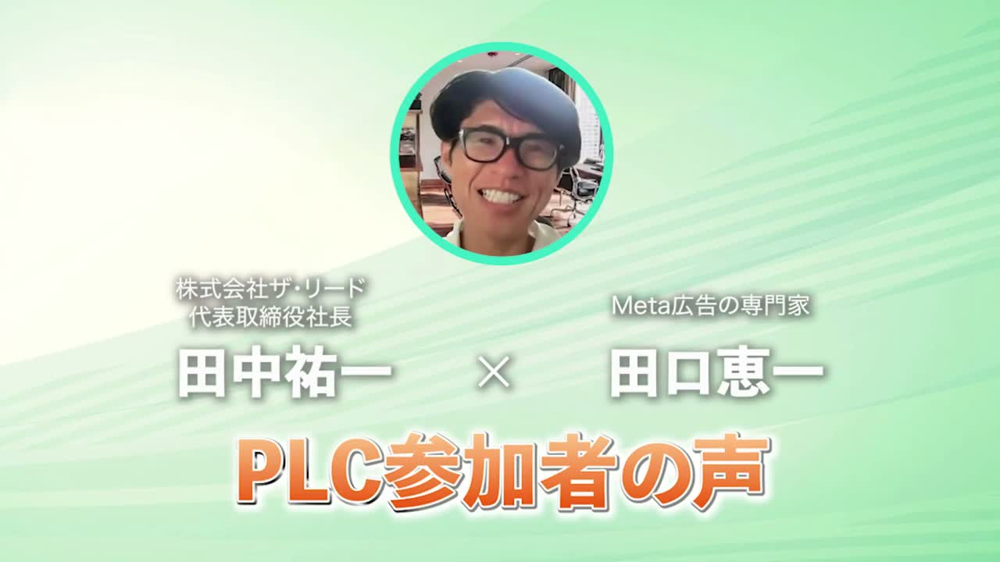
外注版は4本すべてに「×」が入っていました。
小さいことに見えますが、この1文字があるだけで「対談です」という形がひと目で伝わります。
ないと、ただ名前が2つ置いてあるだけに見えてしまうんですよね。
やること：名前と名前の間に「×」を入れる。
2-2. 冒頭0.1秒に、前のテロップが残っています
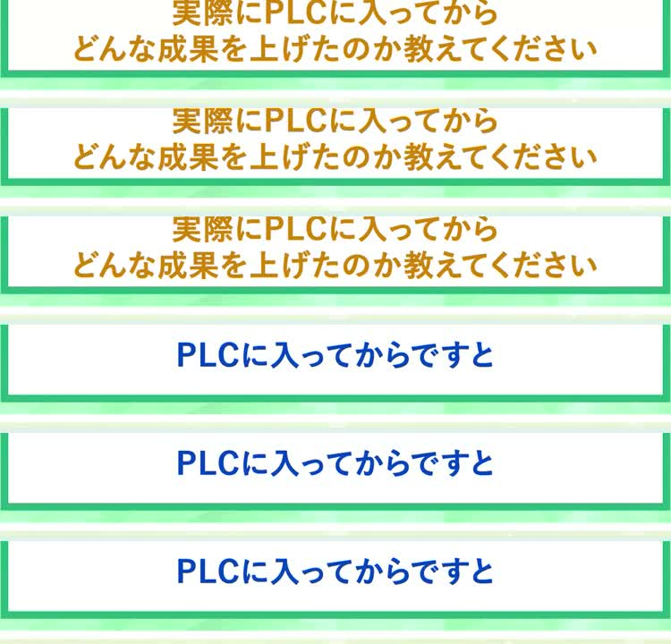
動画の一番頭、3フレームだけ「実際にPLCに入ってからどんな成果を上げたのか教えてください」が金色で出て、すぐ次に切り替わっています。
時間にすると0.1秒です。読めません。見た人は「一瞬ちらついたな」としか思わない。
頭のカットを詰めたときに、テロップのレイヤーだけ残ってしまったのかなと思います。
こういうのは、作っている本人には本当に見えないんですよね。僕も昔よくやりました。
やること：書き出す前に、頭とおしりを1フレームずつ送って確認する。
2-3. 最後の9秒、左上のラベルが消えています
社内版（残り3秒あたり）
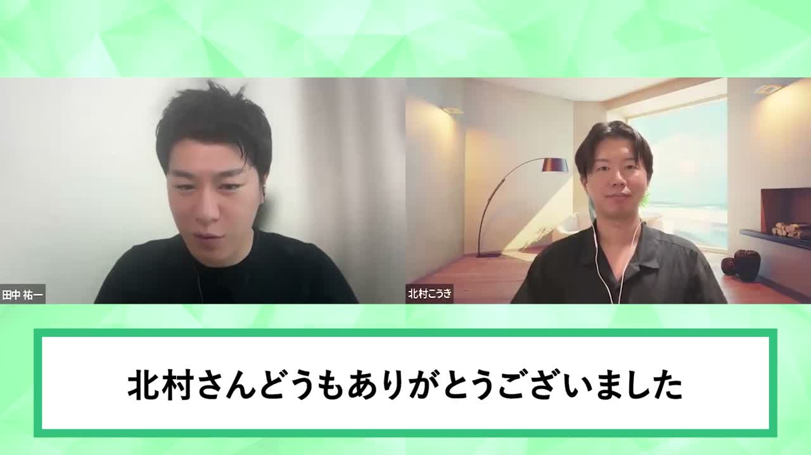
外注版（齋藤さん回・終盤）
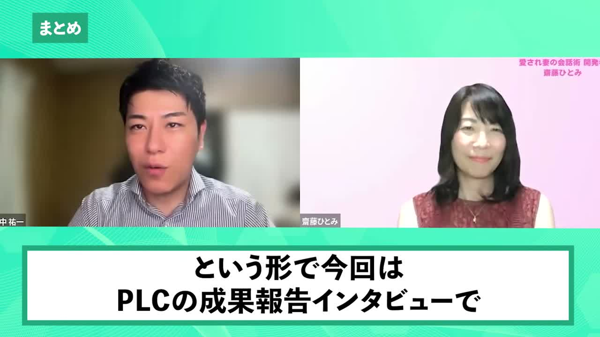
締めの挨拶に入ったところでラベルが消えていました。
外注版は4本とも、最後の1秒までラベルが出続けています。そのうち齋藤さん回と田口さん回は「まとめ」に切り替わる形でした。
締めのパートだけ何もないと、動画が終わったのか続いているのか分からなくなります。
やること：締めのパートは「まとめ」ラベルに切り替える。ラベルを消さない。
2-4. ダイジェストの1枚目が、僕の質問になっています
社内版のダイジェスト冒頭
外注版のダイジェスト冒頭
外注版のダイジェストは、最初から最後までご本人の言葉だけで組まれていました。聞き手の質問はひとつも入っていません。
| 回 | ダイジェストの流れ |
|---|---|
| 齋藤さん回 | 実は年間40万円ぐらいだった → そうしたら200万円になった → 1,850万円になりました |
| 田口さん回 | コンテンツホルダーの方が婚活の事業を → 1,500万円以上を売り上げました |
| ミッチェル鈴木さん回 | 1回目で800万円くらい → 2〜3回目で1500万円前後売れました |
ダイジェストって、その人がどう変わったかを数字で見せる場所なんですよね。
だから1枚目には、一番強い一言を置いてほしいです。
今回でいうと「累計1億5,000万円のプロモーションの売上貢献に関わった」。これが本来の1枚目です。
やること：ダイジェストはご本人の言葉だけで組む。1枚目は数字か変化が出ている一言を持ってくる。
2-5. 北村さんの顔が小さいです
社内版
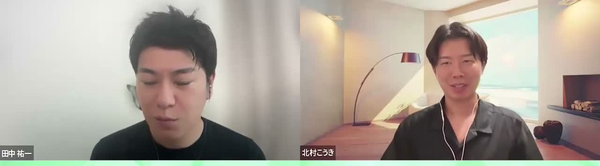
外注版（齋藤さん回）
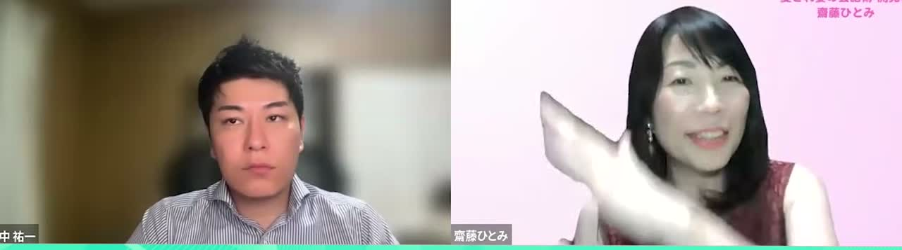
顔の横幅を実際に測ってみました。
| 回 | 田中（左） | ゲスト（右） | ゲスト ÷ 田中 |
|---|---|---|---|
| 社内版（北村さん回） | 266px | 168px | 0.63 |
| 齋藤さん回 | 209px | 236px | 1.13 |
| 岩田さん回 | 361px | 412px | 1.14 |
| ミッチェル鈴木さん回 | 276px | 192px | 0.70 |
主役は出ていただいた方なのに、今回は北村さんが5本の中で一番小さく映っています。
外注版も回によってばらつきはありますが、齋藤さん回と岩田さん回は、僕より大きく寄せていました。
やること：相手の映像を拡大してトリミングし、最低でも僕と同じ大きさに揃える。
2-6. フレームレートが違います
外注版は4本とも25fpsでした。社内版は29.97fpsです。
並べて見ても差は分かりにくいですが、同じシリーズなので揃えておきたいです。
やること：次からシーケンスを25fpsで作る。
3. テロップの割り方（ここが一番効きます）すぐ直せる
正直、僕が一番「違うな」と感じていたのはここでした。
色でも素材でもなくて、テロップの切り方です。
全尺のテロップを機械で数えてみました。
| 指標 | 社内版 | 齋藤さん回 | 岩田さん回 | 田口さん回 | 鈴木さん回 |
|---|---|---|---|---|---|
| 1枚あたりの表示時間 | 3.14秒 | 1.75秒 | 1.61秒 | 2.18秒 | 2.27秒 |
| 1分あたりの枚数 | 18.9枚 | 33.7枚 | 36.3枚 | 26.9枚 | 26.0枚 |
| 1行で収まっている割合 | 28% | 78% | 66% | 63% | 43% |
| 2行になっている割合 | 72% | 22% | 34% | 37% | 57% |
| 文字の高さ（中央値） | 75px | 82px | 83px | 77px | 84px |
並べると、こうなります。
社内版のテロップ（抜粋6枚）
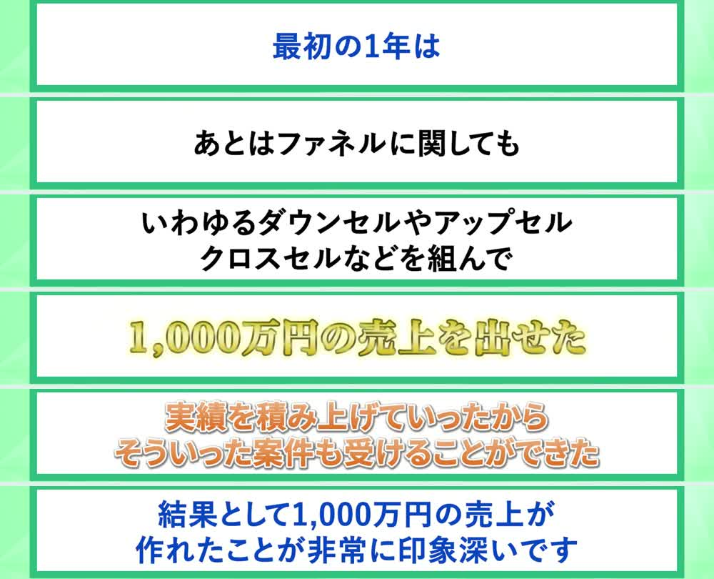
外注版のテロップ（同じく抜粋6枚）
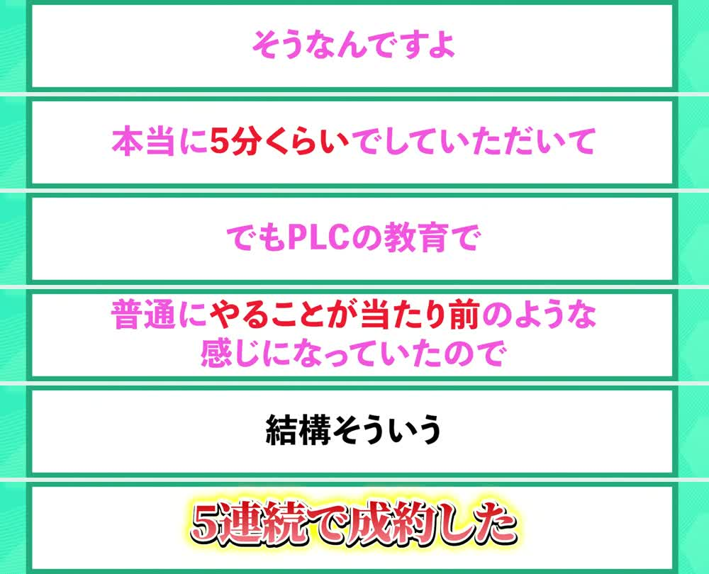
外注さんは「一息ぶん」で1枚を切っています。だから2秒前後でどんどん切り替わっていく。
社内版は1枚に文章を詰め込んでいるので、1枚が3秒以上出っぱなしになって、2行が7割を超えました。文字のサイズも5本の中で一番小さいです。
ようは、テロップが「読み物」になってしまっているということです。
話すテンポとテロップのテンポがズレるので、見ている人は先に読み終わって手持ち無沙汰になります。
やること
・1枚＝一息。文の途中で息継ぎが入ったら、そこで切る
・原則1行。2行にするのは、金額や固有名詞でどうしても切れないときだけ
・目安は1分あたり26枚以上（今は18.9枚です）
・文字の高さは80pxくらいまで上げる（1920×1080の場合）
ここだけでも直すと、体感はかなり変わるはずです。
色より先に、まずここをやってほしいなと思っています。
4. 色を寄せる（素材がないので、できるところまで）寄せられる
ここからは、素材がないので完全一致は無理な部分です。
でも、色の数値だけは実際のピクセルから測れたので、そこは寄せられます。
まず面白かったのが、外注版4本の背景色が全部同じ値だったことです。
つまりこれは回ごとの好みではなくて、決まったテンプレートがあるということですね。
社内版
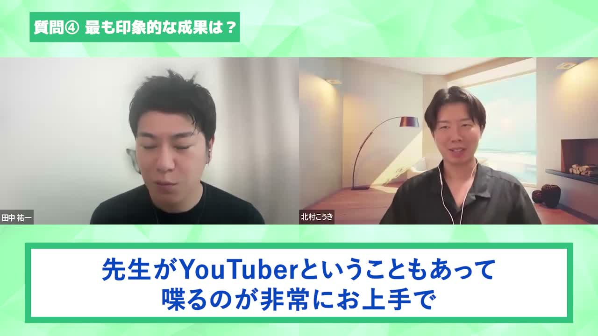
外注版（齋藤さん回）
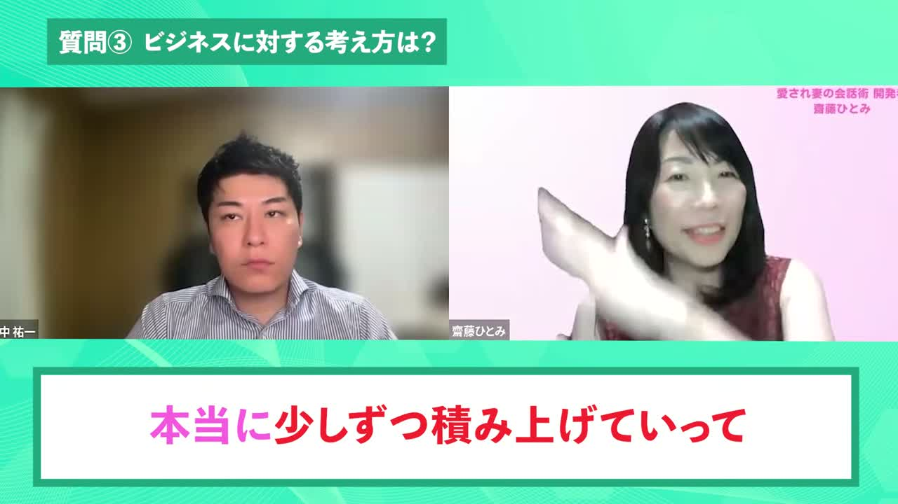
実測値はこうでした。
| 箇所 | 外注版（4本とも同じ値） | 社内版 |
|---|---|---|
| 本編の背景 | #28D8BC | #96EFB4 |
| 上部の帯 | #64EBC5 | #A6F9C2 |
| ダイジェストの外周 | #B6E5DD | #E9F6DE |
| テロップ枠の線 | #16997B | #27B07E |
| 左上ラベルの地色 | #16997B | #26AF7B |
寄せられること：テロップ枠の線と、左上ラベルの地色は、色を指定するだけなので今すぐ #16997B に変えられます。ここは完全に一致させられます。
寄せられること：背景も、ベースの色を #28D8BC に寄せるだけで印象はかなり近づきます。
難しいこと：背景の「柄」です。素材がないと難しい
外注版は斜めの細い流線が入っていて、社内版は三角のローポリ。これは元素材がないと同じにはなりません。
ここは無理に真似しなくていいです。ベースの色が合っていれば、柄の細かい違いは気づかれません。
大事なのは、目で見て似た色を作らないことです。
「だいたいこのへんの緑かな」でやると、必ずズレます。
上の数値をそのまま打ち込んでください。それだけで揃います。
5. これから、自分たちの正本を作りましょう
素材をもらえていない以上、毎回ゼロから色を合わせるのは現実的じゃないです。
だから、今回直したものをそのまま社内の正本にしてしまいましょう。
- 上の色に寄せた状態で、背景・テロップ枠・ラベル・タイトルカードを作り直す
- それをプロジェクトテンプレートとして保存する
- 次回からは新規で作らず、必ずそのテンプレートの複製から始める
これをやっておくと、毎回「色どうだっけ」で悩まなくて済みますし、担当が変わっても同じものが出てきます。
外注に戻す話ではまったくないので、そこは安心してください。
社内で回せるようになったこと自体が、すでに大きな前進です。
あと、もし外注さんと連絡が取れるようなら、背景素材のデータだけ譲ってもらえないか一度聞いてみてもいいかもしれません。
もらえたらラッキー、もらえなくても今のやり方で十分いけます。
6. 書き出し前チェックリスト
毎回、書き出す前にこの順で見てください。
- テロップが1分あたり26枚以上あるか
- 2行テロップが半分以下に収まっているか
- 文字の高さが80px相当になっているか
- タイトルカードに「×」が入っているか
- ダイジェストがご本人の言葉だけで組まれているか
- ダイジェストの1枚目が、数字か変化の一言になっているか
- 冒頭と末尾を1フレームずつ送って、残りテロップがないか
- 締めのパートが「まとめ」ラベルになっているか
- 相手の顔が僕と同じ大きさ以上になっているか
- テロップ枠の線とラベルの地色が #16997B になっているか
- 背景のベース色が #28D8BC に寄っているか
- 25fpsで書き出したか
長くなりましたが、直すところはこれで全部です。
優先順位をつけるなら、3番のテロップの割り方が一番効きます。ここだけ先に直したものを見せてもらえたら、そこで一度すり合わせましょう。
一緒にいいものにしていきましょう^^
比較検証：社内制作1本と外注制作4本を1080pで取得し、フレーム単位で抽出。
色は実ピクセル値を採取、テロップの表示時間と行数は全尺を機械計測、顔の大きさは画像認識で実測しています。
社内資料です。外部への共有はご遠慮ください。